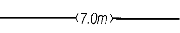
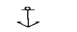
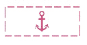
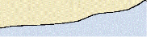
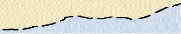
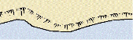
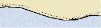
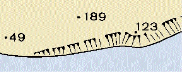
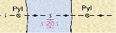

препоръчан път с максимално допустимо газене, обозначено на него
посоката на положен подводен тръбопровод с дълбочина над него
направление по което трябва да се избягва движението в продължение на 7 мили

безопасно място, където може да се приспусне котвата
място, при преминаването на което котвата трябва да се приготви за отдаване
място за заставане на котва

място забранено за заставане на котва
район забранен за заставане на котва
котвена стоянка за кораби превозващи опасни товари

граница на риболовна зона
зона, в която могат да се движат само риболовни кораби
зона, забранена за преминаване на всякакви кораби

брегова линия с пустиня
брегова линия, която е изследвана
брегова линия, която не е изследвана

брегова линия с плажна ивица
брегова линия, която не е изследвана
приблизително нанесена брегова линия

бряг с дюни близо до брега
брегова линия, която не е изследвана
стръмен скалист бряг

приблизително нанесена брегова линия
брегова линия, която не е изследвана
песъчлив бряг

приблизителни стойности на нанесените височини
отделни височини на брега
приблизително нанесени места на височини

кабел високо напрежение на пилони с обозначение на безопасната височина за преминаване
място където плава ферибот свързващ двата бряга
линия, на която е забранено заставането на котва